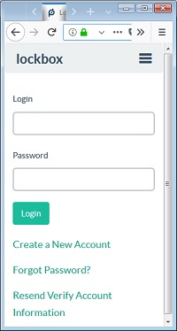
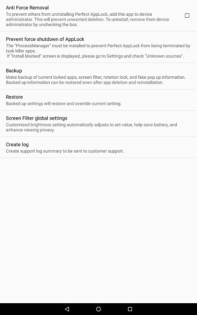

A Week with Pluckeye Android
Pluckeye
is a software utility developed by Single Eye Software LLC in Oregon. It
was created to help human beings who
lack perfect self-control. It began as software for traditional
computers and works by giving you tools to limit what images/sites you see as you navigate the internet.
With the explosion of mobile devices, Single Eye Software made
a foray into the Android market by developing
a browser that blocks all non-text media existing on a web
page - no pictures, videos, sounds. Why? Because some people enage in
online activities they know to be detrimental, but lack the tools and
self-control to stop (even though they would if they had help).
But while Pluckeye can do a good job by itself on a
traditional computer, the Android architecture needs Pluckeye +
something to make a complete solution. The + something is a program
that locks the user out of apps capable of reaching potentially
detrimental material.
This page is my report on using the Pluckeye Browser on an
Android device over the course of a week in April 2018.
Step 1: Developing a Scenario

In my scenario I am a person with online self-control issues. I want to access the internet and my
needs are primarily textual information (news sites). But there are a few websites I want
full access to (images and audio), and I hope to do that through
dedicated apps.
I have a trusted friend (my wife) who is going to lock my
tablet down. When I need changes made, she will be the one to unlock it.
(What if I don't have a trusted friend nearby? The + something used
in this scenario accepts a long passcode. My wife's code was 20 digits.
If I were to combine a long passcode with Single Eye's online Lockbox
tool, it could be an effective alternative. Lockbox allows me to set an
amout of time which will be a delay; the delay can be minutes or hours
long. I decide what is right for me. I type the passcode into my
lockbox and forget it because it is so long. When I need it, I log into
Lockbox...but I can't get the code until the time delay passes first.)
Step 2: Setup
The first thing was to get the hardware ready.
- I used a Sony Iconium tablet that I borrowed from my
employer.
- I installed the Pluckeye Browser.
- I installed a subscription magazine app I use for
testing purposes.
- I installed a web-based educational app for testing
purposes.
- I installed Perfect AppLock (PAL).
- [Why choose Perfect AppLock?]
- It has a free version, paid for by advertising.
- The advertisements only showed when I logged into PAL, which was not very often.
- It supports a long passcode, which allows it to work with Lockbox as described above.
- It was the first locking app I found that seemed to fit the above requirements.
- I
assume it is meant to lock my friends out of my personal apps when they
use my device, so the fact that I am using it to lock myself out of my
apps is a cool twist of technology.
Then I configured PAL.
- You need to give PAL permission to see what you are doing.
- You need to let the device be an administrator to prevent
you from force quitting PAL.
- You can then use PAL to lock every app that would let you access the detrimental material.
- PAL should autostart with the device, and cannot be turned off unless it is unlocked first.

Locking an app is quite simple. Just click on the padlock icon associated with the app.
The browsers are locked because I don't want to have access to detrimental material when my self-control level may be low.
Google
Play is locked because if it is not, I can download a new app and it is
not immediately locked. In my test, when I downloaded an app, it
asked if I wanted it locked, but did not automatically lock it.
Any
program allowing internet access may be suspect. Some testing will be
necessary to fine tune this system to each person's specific need.
Step 3: Testing
Pluckeye
browser works like any other browser but does not show images. As a
modified implementation of Firefox, it works like other Android
browsers you have used.
During my test this week (admittedly
limited in scope), Pluckeye did not crash or misbehave. I visited the
major search engines and a number of news sites and blogs.
I did
light testing with the Kids A-Z program that is used at our school.
This app lets students log into an account and read online books that
have been assigned.
Using a test student, I was able to read
books, hear them read to me, and see the images. I could not find a way
to "break out" of their website and access other sites.
Microsoft's
Android implementation of Word has a feature called "smart lookup" that
lets you get some quick information on whatever you are typing. None of
the results I obtained were problematic. Certain keywords appear to be
blocked, and any image received stays at the thumbnail size.
Clicking
on the links give you the option to open it in a browser. But since the
browsers are locked, the only option for follow-up is Pluckeye.
I tested the Android implementation of a magazine I read.
The
magazine had links allowing me to use a built-in browser to get to the
publisher's website for additional content. However, unlike the Kids
A-Z app above, this browser let me go beyond the publisher's website.
It
did not take long to find a movie review with a link to a trailer. The
trailer gave me access to Youtube. And Youtube is full of content that
is potentially detrimental and addictive.
Conclusion
The combination of Pluckeye browser and Perfect AppLock appears to be
effective at helping people with self-control issues to limit their
consumption of detrimental material while on an Android device. But it
only works well if the other apps on the device are carefully screened
regarding their ability to access detrimental material as well.
Regarding
the magazine app, all of the textual material in the magazine is
available on the publisher's website and is therefore readable with
Pluckeye. My hope was that in this one area I could enjoy images as
well, but blocking the app would be necessary due to the presence of
the built-in browser.
My other disappointment was the inability to access audio. Pluckeye browser currently blocks downloading all media, including mp3 files.
Quite a few news sources I use will post their material as Youtube videos rather than downloadable mp3s. But I was unable to download the audio via online converters due to Pluckeye's
restrictions. And I could not find an app that only streams Youtube's audio as that appears to be a violation
of their user agreement.
In this scenario, however, a trusted helper can give the user near immediate access to normal browsing when appropriate.
Disclaimers and Disclosures
I
have no financial interest in PAL, but I have chosen to support Single
Eye Software by being a paid subscriber to the desktop version of
Pluckeye. I have been active in the Pluckeye community for a couple
years; my comments can be identified by my handle RNYC on the Pluckeye forum and RNYCX2 on the Reddit forum.
The
Android operating system, PAL, and/or Pluckeye are all subject to code
changes that could alter the results of using them together.
Computing
environments are subject to the idiosyncrasies of their users. While
this set up seemed effective to me, your mileage may vary.
Life
is fuller and freer when I am equipped to limit my unnecessary
browsing. It is worth making changes until you find a solution that
works in your situation.